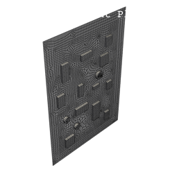
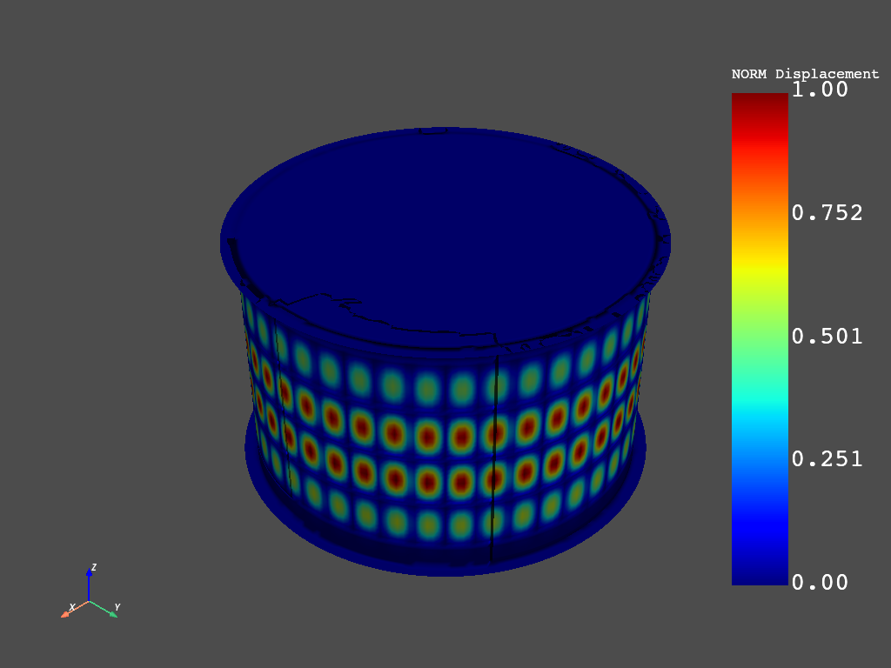
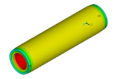
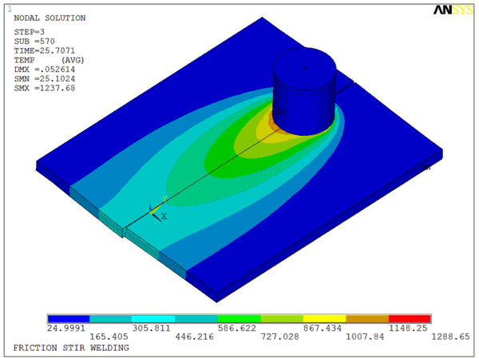
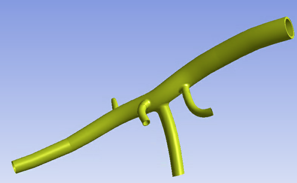

Technology showcases#
The following examples initially come from the APDL technology showcase manual.
They initially were MAPDL files.
They have been reproduced in Python files using PyMAPDL with the ansys-mapdl-core library.


Calibrating and validating a hyperelastic constitutive model
Calibrating and validating a hyperelastic constitutive Model

Dynamic simulation of a printed circuit board assembly
Dynamic simulation of a printed circuit board assembly

Buckling and post-buckling analysis of a ring-stiffened cylinder using nonlinear stabilization
Buckling and post-buckling

Cardiovascular stent simulation
Cardiovascular Stent Simulation

Friction Stir Welding (FSW) simulation
Friction Stir Welding (FSW) Simulation

Inverse-solving analysis of a cardiovascular structure
Inverse-Solving Analysis of a Cardiovascular Structure